The Tweaks Anthology - Unique Icons
A comparison of the icon updates for Unique Icons component of Tweaks Anthology. Last updated for v10.
Items which are noted as 'skipped' under certain conditions are skipped because they already have a unique icon on the platform, e.g. Balduran's Shield does not share the same icon with Saving Grace on BG2EE or if the One Pixel Productions (1pp) mod is installed, so Unique Icons will skip it.
This covers the original Icewind Dale as well as the Enhanced Edition.
| Original Icon | Updated Icon | Item Name |
|---|---|---|
 |
 |
2H Axe of Greater Phasing +2 (Two Handed Axe duplicate) |
|
 |
Flawless Two Handed Axe (Two Handed Axe duplicate) |
|
 |
Foe's Fate (Two Handed Axe duplicate) |
|
 |
Infected Two Handed Axe +2 (Two Handed Axe duplicate) |
|
 |
Two Handed Axe +2: Life Giver (Two Handed Axe duplicate) |
|
 |
Two Handed Axe of Resistance +3 (Two Handed Axe duplicate) |
|
 |
Two Handed Fire Axe +1 (Two Handed Axe duplicate) |
| Mirek's Family Heirloom (Necklace duplicate) | ||
| Symbol of Corellon Larethian (Amulet of Protection +1 duplicate) | ||
| Symbol of Labelas Enoreth (Amulet of Protection +1 duplicate) | ||
| Symbol of Sehanine Moonbow (Amulet of Protection +1 duplicate) | ||
| Symbol of Shevarash (Amulet of Protection +1 duplicate) | ||
| Symbol of Solonor Thelandira (Amulet of Protection +1 duplicate) | ||
| 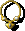 | Selune's Caress (Shield Amulet duplicate) | |
| 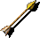 | Confusion Arrows +3 (Arrows +1 duplicate) | |
| Hammer Arrow +1 (Arrows +1 duplicate) | ||
| Piercing Arrows +1 (Arrows +1 duplicate) | ||
| Translocation Arrows (Arrows of Detonation duplicate) | ||
| Inferno Arrows +2 (Arrow of Fire duplicate) | ||
| Arrows of the Hand (Arrow +2 duplicate) | ||
 |
Hammer Arrows (High Quality Arrows duplicate) | |
| 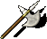 | Faith Killer (Battle Axe duplicate) | |
 |
Battle Axe +2: Defender (Battle Axe +1 duplicate) | |
| Battle Axe +3: Fatigue (Battle Axe +1 duplicate) | ||
| Benorg's Truth (Battle Axe +1 duplicate) | ||
| Charged Battle Axe +2 (Battle Axe +1 duplicate) | ||
| Poisonous Battle Axe +2 (Battle Axe +1 duplicate) | ||
 |
 |
Flawless Battle Axe (High Quality Battle Axe duplicate) |
| Bone Marrow Belt (Girdle duplicate) | ||
| 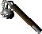 | Crooked Flail (Flail duplicate) | |
 |
Fast Flail +2 (Flail duplicate) | |
| Fire Flail +3 (Flail duplicate) | ||
 |
Hammer Flail +2 (Flail duplicate) | |
| Shocking Flail +4 (Flail duplicate) | ||
 |
Lesser Static Star +1 (Morning Star +1 duplicate) | |
 |
Morning Star +2: Hammer (Morning Star +1 duplicate) | |
| Morning Star +4: Defender (Morning Star +1 duplicate) | ||
 |
Morning Star of Action +4 (Morning Star +1 duplicate) | |
 |
Morning Star of Confusion +1 (Morning Star +1 duplicate) | |
 |
Morning Star of Lesser Phasing (Morning Star +1 duplicate) | |
 |
Morning Star of the Gods (Morning Star +1 duplicate) | |
| Sanctified Morning Star +3 (Morning Star +1 duplicate) | ||
 |
Static Star +3 (Morning Star +1 duplicate) | |
| 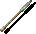 |  |
Bolt of Sekolah's Fire (Bolt of Polymorphing duplicate) |
| Worn Out Boots (Boots of Speed duplicate) | ||
| 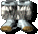 | Elven Sewn Boots (Boots of the North duplicate) | |
| 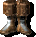 | Shadowed Boots (Boots of Grounding duplicate) | |
| 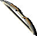 |  |
Kaylessa's Bow (Composite Long Bow +1 duplicate) |
 |
 |
Long Bow +1: Protector (Long Bow +1 duplicate) |
|
 |
Long Bow +2: Defender (Long Bow +1 duplicate) |
|
 |
Long Bow +2: Protector (Long Bow +1 duplicate) |
|
 |
Long Bow +3: Defender (Long Bow +1 duplicate) |
|
 |
Long Bow +3: Repeater (Long Bow +1 duplicate) |
|
 |
Long Bow +4: Hammer (Long Bow +1 duplicate) |
|
 |
Long Bow of Action +2 (Long Bow +1 duplicate) |
 |
 |
Huge Long Bow (High Quality Composite Long Bow duplicate) |
| Kaylessa's Gloves (Gauntlets of Ogre Power duplicate) | ||
| Bullets of Fire +2 (Bullet duplicate) | ||
| Shadowed Robe (Traveler's Robe duplicate) | ||
| Robe of Enfusing (Adventurer's Robe duplicate) | ||
| Necromancer's Robe (Robe of the Good Archmagi duplicate) | ||
| Presio's Dagger (Dagger duplicate) | ||
| Chaos Dagger +3 (Dagger +1 duplicate) | ||
| Fire Dagger +2 (Dagger +1 duplicate) | ||
| Fire Dagger (Dagger +1 duplicate) | ||
| Life Dagger +2 (Dagger +1 duplicate) | ||
| Mage Dagger +1 (Dagger +1 duplicate) | ||
| Mage Dagger +2 (Dagger +1 duplicate) | ||
| Mage Dagger +3 (Dagger +1 duplicate) | ||
| Phase Dagger (Dagger +1 duplicate) | ||
| Static Dagger +1 (Dagger +1 duplicate) | ||
| Mage Dagger +4 (Dagger +2 duplicate) | ||
 |
Hammer Darts (Dart duplicate) | |
 |
Berserker Darts (Dart +1 duplicate) | |
| Blinding Darts +2 (Dart +1 duplicate) | ||
 |
Fire Darts +2 (Dart +1 duplicate) | |
| Inferno Darts +4 (Dart +1 duplicate) | ||
 |
Static Darts +3 (Dart +1 duplicate) | |
 |
 |
Darig's Rest (Halberd +1 duplicate) |
|
 |
Diseased Halberd +1 (Halberd +1 duplicate) |
|
 |
Doom Halberd +3 (Halberd +1 duplicate) |
|
 |
Great Halberd +4 (Halberd +1 duplicate) |
|
 |
Halberd +1: Defender (Halberd +1 duplicate) |
|
 |
Halberd of Sparks +1 (Halberd +1 duplicate) |
|
 |
Life Halberd +2 (Halberd +1 duplicate) |
|
Star Forged Halberd +3 (Halberd +1 duplicate) | |
 |
 |
Finest Halberd (High Quality Halberd duplicate) |
|
 |
Giant Halberd (High Quality Halberd duplicate) |
| Conlan's Hammer (War Hammer duplicate) | ||
 |
Corrosive Hammer (War Hammer +1 duplicate) | |
 |
Sanctified War Hammer +1 (War Hammer +1 duplicate) | |
 |
Sanctified War Hammer +3 (War Hammer +1 duplicate) | |
| War Hammer +3: Life Giver (War Hammer +1 duplicate) | ||
 |
War Hammer +4: Defender (War Hammer +1 duplicate) | |
| War Hammer of Phasing +3 (War Hammer +1 duplicate) | ||
 |
War Hammer of Sparks +2 (War Hammer +1 duplicate) | |
 |
 |
Massive War Hammer (High Quality War Hammer duplicate) |
| Helmet (Helm of Glory duplicate) | ||
| Helmet (Helmet duplicate) | ||
| Helmet (Helmet duplicate) | ||
| 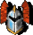 | Helmet (Helmet of Infravision duplicate) | |
| Helmet (Helmet of Infravision duplicate) | ||
| Reinforced Leather +1 (Studded Leather Armor +1 duplicate) | ||
| Studded Leather +1: Shadowed (Studded Leather Armor +1 duplicate) | ||
| Studded Leather +2: Shadowed (Studded Leather Armor +1 duplicate) | ||
| Studded Leather +4: Shadowed (Studded Leather Armor +1 duplicate) | ||
| Studded Leather of Resistance +3 (Studded Leather Armor +1 duplicate) | ||
 |
 |
Demon's Breath (War Hammer duplicate) |
|
 |
Sanctified War Hammer +2 (War Hammer duplicate) |
|
 |
Star Forged War Hammer +4 (War Hammer duplicate) |
|
 |
War Hammer of Phasing +2 (War Hammer duplicate) |
| Bottle of Wine (Elven healing Wine duplicate) | ||
| Bottle of Wine (Elven healing Wine duplicate) | ||
| Dugmaren's Key (Plain Key duplicate) | ||
 |
Forge Key (Plain Key duplicate) | |
| Gate Key (Plain Key duplicate) | ||
| Full Plate Mail +1 (Shadowed Plate duplicate) | ||
 |
Mummy's Tea (Antidote duplicate) | |
 |
Philter of Purification (Antidote duplicate) | |
| Vial of mysterious liquid (Antidote duplicate) | ||
| Berduskan Black Brew (Container of Razorvine Extract duplicate) | ||
| The Genie's Flask (Potion of Clear Purpose duplicate) | ||
| Potion of Arcane Absorption (Potion of Action Transference duplicate) | ||
| Potion of Aura Enhancement (Potion of Action Transference duplicate) | ||
| Potion of Constitution (Potion of Action Transference duplicate) | ||
 |
Potion of Dissipation (Potion of Action Transference duplicate) | |
| Potion of Greater Resistance (Potion of Action Transference duplicate) | ||
| Potion of Holy Transference (Potion of Action Transference duplicate) | ||
| Potion of Life Transference (Potion of Action Transference duplicate) | ||
| Potion of Magical Resistance (Potion of Action Transference duplicate) | ||
| Potion of Resistance (Potion of Action Transference duplicate) | ||
| Potion of Strength Transference (Potion of Action Transference duplicate) | ||
| Ring of Pain Amplification (Ring duplicate) | ||
| Greater Ring of the Warrior (Ring of Protection +1 duplicate) | ||
| Ring of Aura Transfusion (Ring of Protection +1 duplicate) | ||
| Ring of Greater Resistance (Ring of Protection +1 duplicate) | ||
| Ring of Intelligence (Ring of Protection +1 duplicate) | ||
| Ring of Lesser Resistance (Ring of Protection +1 duplicate) | ||
| Ring of Missile Deflection (Ring of Protection +1 duplicate) | ||
| Ring of Reckless Action (Ring of Protection +1 duplicate) | ||
| Ring of Resistance (Ring of Protection +1 duplicate) | ||
| Ring of Strength (Ring of Protection +1 duplicate) | ||
| Ring of the Protector +2 (Ring of Protection +1 duplicate) | ||
| Ring of the Warrior Thief (Ring of Protection +1 duplicate) | ||
| Ring of the Warrior (Ring of Protection +1 duplicate) | ||
| Kaylessa's Ring (Gold Ring duplicate) | ||
| Great Shield +3 (Large Shield +1 duplicate) | ||
 |
Large Shield +1 of Missile Deflection (Large Shield +1 duplicate) | |
| Large Shield of Strength +1 (Large Shield +1 duplicate) | ||
 |
Reinforced Large Shield +1 (Large Shield +1 duplicate) | |
 |
Reinforced Large Shield +2 (Large Shield +1 duplicate) | |
| 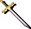 |  |
Bastard Sword +2: Conflagration (Bastard Sword +1 duplicate) |
 |
Bastard Sword +2: Life Giver (Bastard Sword +1 duplicate) | |
 |
Bastard Sword +3: Defender (Bastard Sword +1 duplicate) | |
 |
Bastard Sword +3: Incinerator (Bastard Sword +1 duplicate) | |
| Bastard Sword of Action +1 (Bastard Sword +1 duplicate) | ||
 |
Bastard Sword of Greater Phasing (Bastard Sword +1 duplicate) | |
 |
Cancerous Bastard Sword +4 (Bastard Sword +1 duplicate) | |
 |
Flaming Bastard Sword +1 (Bastard Sword +1 duplicate) | |
 |
Phasing Bastard Sword +1 (Bastard Sword +1 duplicate) | |
| Bhaal's Fire (Long Sword +1 duplicate) | ||
 |
Fine Long Sword +1 (Long Sword +1 duplicate) | |
 |
Flaming Long Sword +2 (Long Sword +1 duplicate) | |
 |
Hold Fast (Long Sword +1 duplicate) | |
 |
Life's Gift (Long Sword +1 duplicate) | |
 |
Long Sword +3: Enforcer (Long Sword +1 duplicate) | |
 |
Long Sword of Action +2 (Long Sword +1 duplicate) | |
 |
Long Sword of Action +4 (Long Sword +1 duplicate) | |
| Long Sword of Confusion +2 (Long Sword +1 duplicate) | ||
 |
Spiked Long Sword +1 (Long Sword +1 duplicate) | |
 |
Long Sword of the Hand (Long Sword +2 duplicate) | |
| Flaming Short Sword +1 (Short Sword +1 duplicate) | ||
| Short Sword +4: Hammer (Short Sword +1 duplicate) | ||
 |
Short Sword of Action +2 (Short Sword +1 duplicate) | |
 |
Short Sword of Health +4 (Short Sword +1 duplicate) | |
| Short Sword of Lesser Phasing (Short Sword +1 duplicate) | ||
| Short Sword of Shadows +3 (Short Sword +1 duplicate) | ||
| Sloth (Short Sword +1 duplicate) | ||
| Some God's Lesser Promise (Short Sword +1 duplicate) | ||
| Static Short Sword +3 (Short Sword +1 duplicate) | ||
 |
Finest Long Sword (High Quality Long Sword duplicate) | |
 |
 |
Fang (High Quality Bastard Sword duplicate) |
| 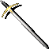 |  |
Kresselack's Sword (Two Handed Sword +1 duplicate) |
 |
Static Two Handed Sword +4 (Two Handed Sword +1 duplicate) | |
 |
Two Handed Sword +1: Hammering (Two Handed Sword +1 duplicate) | |
 |
Two Handed Sword +2: Defender (Two Handed Sword +1 duplicate) | |
 |
Two Handed Sword +2: Hammering (Two Handed Sword +1 duplicate) | |
 |
Two Handed Sword +3: Bane (Two Handed Sword +1 duplicate) | |
 |
Two Handed Sword +4: Backbiter (Two Handed Sword +1 duplicate) | |
 |
Two Handed Sword +4: Life Giver (Two Handed Sword +1 duplicate) | |
 |
Two Handed Sword of Resistance +1 (Two Handed Sword +1 duplicate) | |
 |
 |
Bonecleaver (Spider's Bane duplicate) |
 |
 |
Flawless Two Handed Sword (High Quality Two Hand Long Sword duplicate) |
|
 |
Giant Two Handed Sword (High Quality Two Hand Long Sword duplicate) |
 |
 |
Heavy Crossbow of Defense (Heavy Crossbow +1 duplicate) |
|
 |
Heavy Crossbow of Speed (Heavy Crossbow +1 duplicate) |
|
 |
Reinforced Heavy Crossbow (Heavy Crossbow +1 duplicate) |
|
 |
Repeating Heavy Crossbow (Heavy Crossbow +1 duplicate) |
| 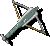 |  |
Light Crossbow of Defense (Light Crossbow +1 duplicate) |
 |
Light Crossbow of Speed (Light Crossbow +1 duplicate) | |
 |
Repeating Light Crossbow (Light Crossbow +1 duplicate) | |
 |
 |
Finest Heavy Crossbow (High Quality Heavy Crossbow duplicate) |
 |
 |
Finest Light Crossbow (High Quality Light Crossbow duplicate) |
This covers the original Baldur's Gate II as well as the Enhanced Edition.
| Original Icon | Updated Icon | Item Name |
|---|---|---|
 |
Sensate Amulet (Amulet of Power duplicate) | |
|
Battle Axe +3 from Enchanted Weapon (Battle Axe duplicate) | |
|
Bruenor's Battle Axe (Battle Axe +1 duplicate) | |
|
Axe of Hrothgar +3 (Battle Axe of Mauletar +2 duplicate) | |
 |
Adoy's Belt (Girdle of Fortitude duplicate) | |
 |
Mace +2 from Rod of Lordly Might (Mace +1 duplicate) | |
 |
Mace +3 from Enchanted Weapon (Mace +1 duplicate) | |
 |
Mauler's Arm +2 (Mace +1 duplicate) Duplicates Krotan's Skullcrusher +2 on BG2EE, so still updated there |
|
 |
Morning Star +3 from Enchanted Weapon (Morning Star +1 duplicate) | |
 |
 |
Everard's Morning Star +2 (Morning Star +2 duplicate) |
 |
 |
The Sleeper +2 (Morning Star +2 duplicate) |
 |
 |
Handmaiden's Mace (Ardulia's Fall +1 duplicate) |
 |
Jerrod's Mace (Mace +2 duplicate) | |
 |
Club +1 (Club +3 duplicate) | |
 |
Club +2 (Club +3 duplicate) | |
 |
Marduuk's Mallet +3 (Club +3 duplicate) | |
|
Blessed Bolt (Bolt +1 duplicate) | |
| Kuo-Toa Bolts (Bolt +1 duplicate) | ||
| Paralytic Bolt (Bolt +1 duplicate) | ||
 |
 |
Moonlight Walkers (Gargoyle Boots duplicate) |
 |
 |
Tansheron's Bow +3 (Cattie-Brie version) (Shortbow +1 duplicate) |
 |
 |
The Winged's Gauntlet (Bard's Gloves duplicate) |
 |
Dark Elven Chain (Ashen Scales +2 duplicate) | |
 |
Robe of Vecna (Mage Robe of Cold Resistance duplicate) | |
 |
 |
Cloak of the Lich (Shadow Thief Cloak duplicate) |
| 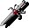 |  |
Dagger +4, Life-Stealer (Soultaker Dagger duplicate) |
 |
Neb's Nasty Cutter (Pixie Prick +3 duplicate) | |
|
Dart +5 from Cloak of he Stars (Dart of Wounding duplicate) | |
 |
 |
Harmonium Halberd (Dragon's Bane +3 duplicate) |
| 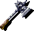 | |
Aegis Fang (Dwarven Thrower +3 duplicate) |
 |
Vhailor's Helm (Skull of Death duplicate) | |
| Wong Fei's Ioun Stone (Pale Green Ioun Stone duplicate) | ||
 |
Korkorran's Cowl (Thieves' Hood duplicate) | |
 |
 |
Harp of Pandemonium (Harp of Discord duplicate) |
 |
Ornate Dagger (Embarl's Dagger duplicate) | |
| 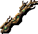 | Staff of Arundel (Staff of the High Forest duplicate) | |
 |
Mithral Field Plate Armor +2 (Full Plate Mail duplicate) | |
| Full Plate +2 (Full Plate Mail +1 duplicate) | ||
 |
Plate of Balduran (Full Plate Mail +1 duplicate) | |
 |
Silver Dragon Scale (Full Plate Mail +2 duplicate) | |
| 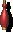 | |
Sleeping Draught (Red Potion duplicate) |
|
Potion of Clairvoyance (Potion of Agility duplicate) | |
 |
Breath Potion (Potion of Magic Blocking duplicate) | |
| Potion of Squirrel Change (Potion of Freedom duplicate) | ||
|
Sulphurous Poison (Potion of Freedom duplicate) | |
 |
Wine Vinegar (Empty Potion Bottle duplicate) | |
 |
Ring of Acuity (Ring of Wizardry duplicate) | |
 |
Ring of Human Influence (Ring of Regeneration duplicate) | |
 |
Mercykiller Ring (Ring of Lock Picks duplicate) | |
 |
Shield of Balduran (Saving Grace +3 duplicate) | |
 |
Sling of Everard +5 (Sling of Seeking +2 duplicate) | |
| 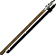 |  |
Spear +3 from Rod of Lordly Might (Spear duplicate) |
 |
 |
Spear of Kuldahar +3 (Spear +2 duplicate) |
 |
 |
Quarter Staff +3 from Enchanted Weapon (Quarterstaff +1 duplicate) |
|
 |
Neera's Staff +1 (Quarterstaff +1 duplicate) |
 |
 |
Stirv's Wrangler +2 (Quarter Staff +2 duplicate) |
 |
Flaming Long Sword +1 from Rod of Lordly Might (Long Sword +1 duplicate) | |
 |
Long Sword +3 from Enchanted Weapon (Long Sword +1 duplicate) | |
 |
The Vampire's Revenge (Long Sword +1 duplicate) | |
 |
Short Sword +3 from Enchanted Weapon (Short Sword +1 duplicate) | |
| Scimitar +3 (Scimitar +3, Frostbrand duplicate) | ||
 |
Sword of Flame +1 (Flame Tongue duplicate) | |
| Habib's Scimitar (Belm +2 duplicate) | ||
| 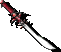 | Sword of Balduran (Blade of Roses +3 duplicate) | |
 |
 |
Dak'kon's Zerth Blade (Katana +1 duplicate) |
 |
Kachiko's Wakizashi +3 (Wakizashi +1 duplicate) | |
| 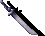 |  |
Scarlet Ninja-To +3 (Ninja-To duplicate) |
| 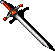 |  |
The Brass Blade +5 (Bastard Sword +3 duplicate) |
 |
 |
Joril's Dagger +3 (Harbinger +3 duplicate) |
 |
 |
Sword of Chaos +2 (Two-Handed Sword +2 duplicate) |
 |
 |
Dark Justice +5 (Silver Sword duplicate) |
 |
Wand of Apprenti (Wand of Fear duplicate) | |
 |
Wand of Glitterdust (Wand of Wonder duplicate) |